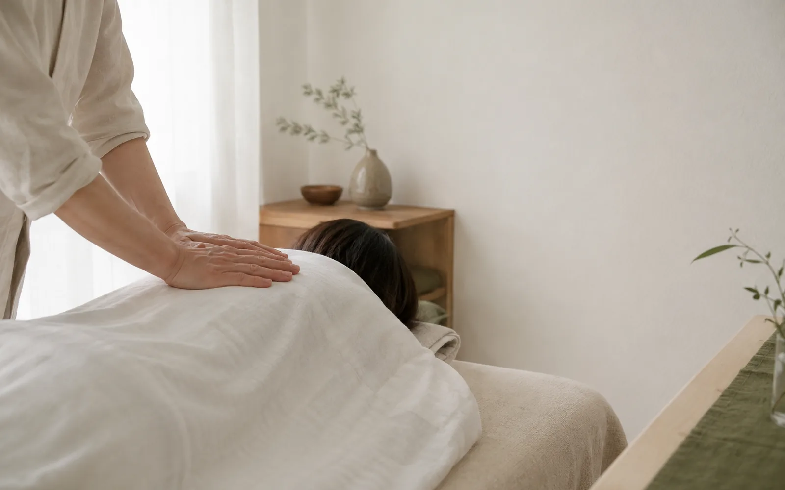
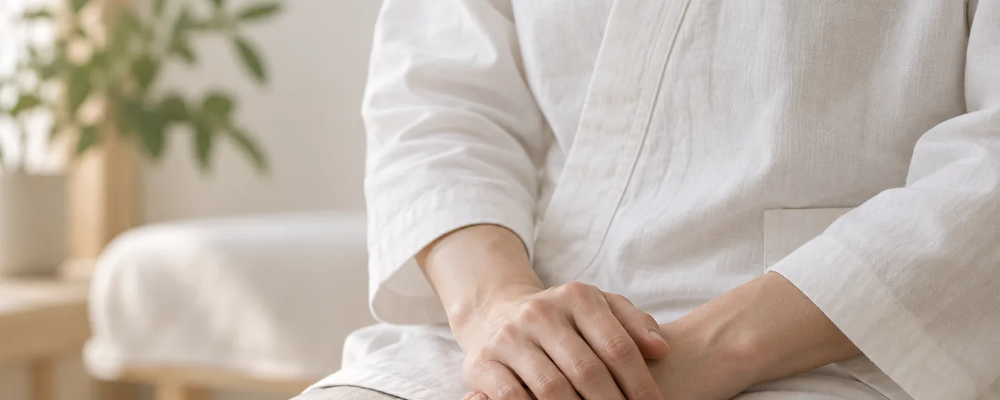
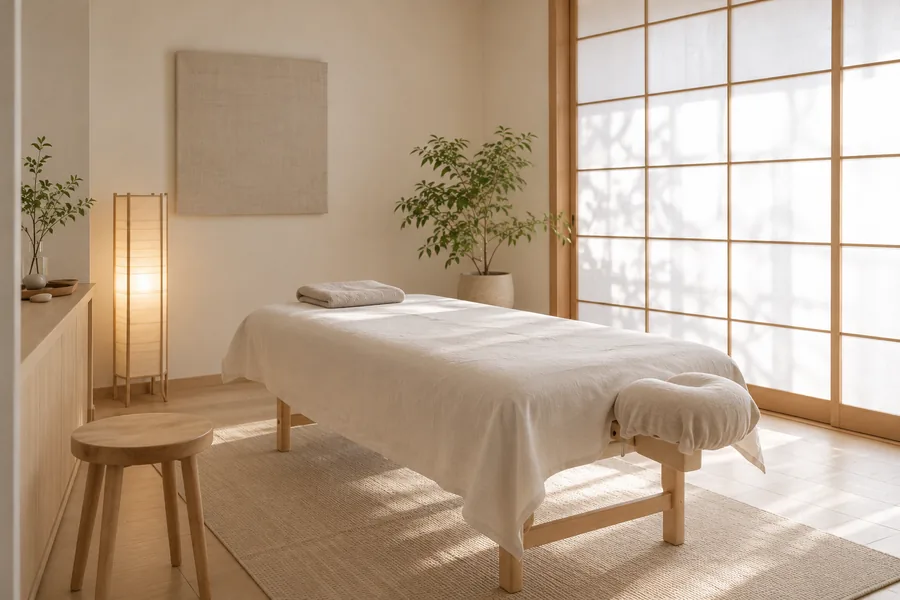
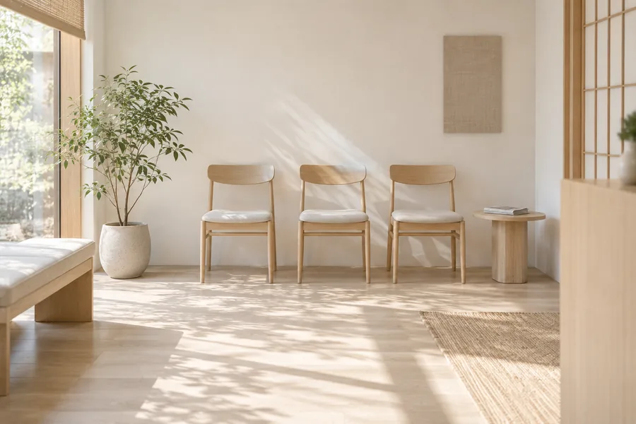
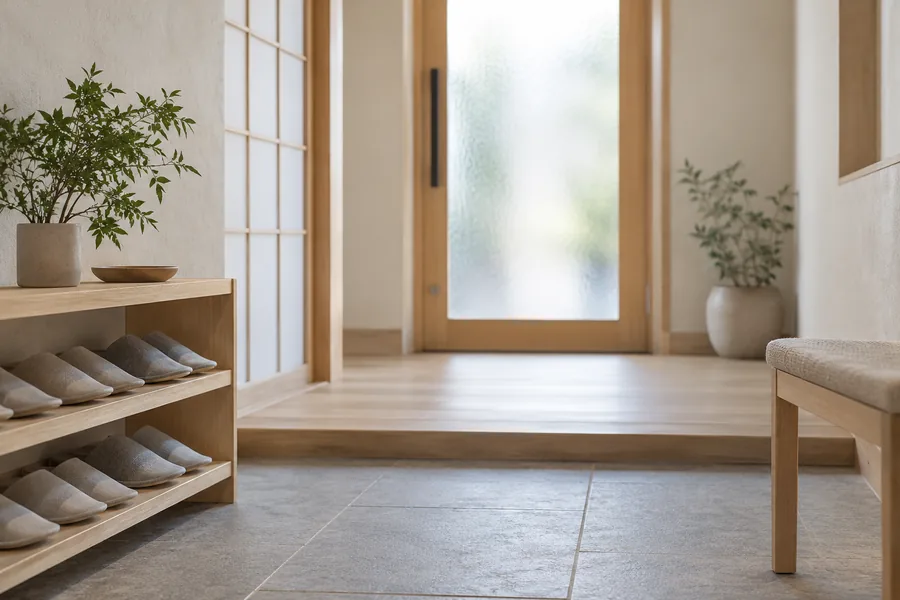
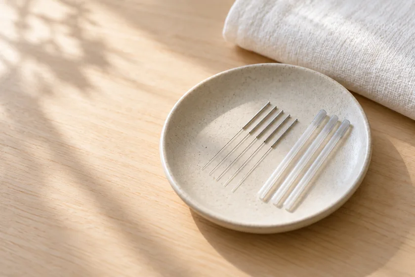
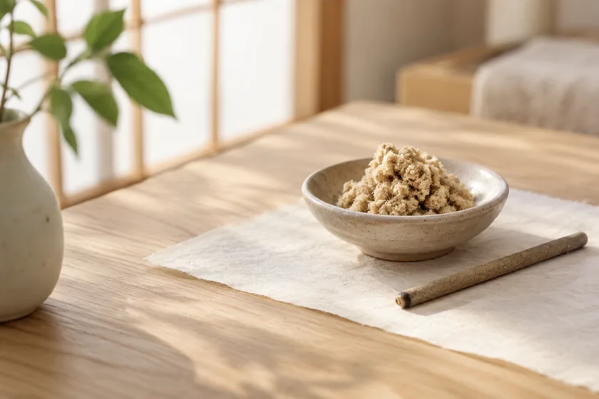
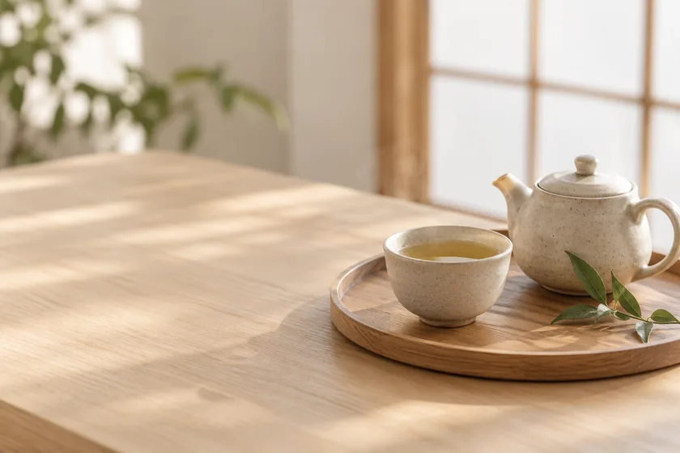

眠れない夜が、減っていきました。
3年ほど前から夜中に何度も目が覚めるようになり、心療内科の薬を飲んでいました。青木先生に相談したところ、薬を否定するのではなく『今は使いながら、少しずつ体を整えましょう』と言ってくださり、安心して通えました。半年後、薬を半分に減らせました。

不眠、めまい、IBS、パニック障害——病院で「異常なし」と言われた慢性不調の方へ。
東京・○○の自律神経専門鍼灸院です。
検査では何も出ない。けれど、明らかに体は辛い。
その状態が続くと、いつしか「自分が弱いせいかもしれない」と思い込んでしまう方も少なくありません。
あおき鍼灸整体院は、自律神経の不調を専門に診る鍼灸整体院です。
脈診と問診でその日の状態を読み、痛みのない繊細な鍼で整えます。通院ペースを押し付けることはありません。
病院で「異常なし」と言われた不調の多くは、自律神経のはたらきの乱れが背景にあります。まず、いまの状態を確かめてみてください。
不眠
寝つけない、夜中に何度も目が覚める
めまい
立ち上がるとふらつく、視界が揺れる
IBS（過敏性腸症候群）
緊張するとお腹を下す、便通が不安定
パニック障害
電車や人混みで動悸・息苦しさ
慢性的な疲労感
寝ても疲れが取れない
動悸・息苦しさ
安静時にも胸がドキドキする
頭痛・肩こり
鎮痛薬が手放せない
冷え・のぼせ
自律神経の温度調整がうまくいかない
胃腸の不調
食欲不振、胃もたれ
月経不順・PMS
ホルモンバランスの乱れ
耳鳴り
病院では「異常なし」と言われた
イライラ・不安感
些細なことで動揺する
3つ以上当てはまる方は、自律神経の乱れが背景にある可能性があります。
自律神経の不調について
はじめまして。あおき鍼灸整体院の青木と申します。
私のもとには、いくつもの病院を巡って「異常なし」と言われた方がいらっしゃいます。検査では何も出ない。けれど、明らかに体は辛い。その状態が続くと、いつしか「自分が弱いせいかもしれない」と思い込んでしまう方も少なくありません。
違います。検査で映らないだけで、自律神経は確かに悲鳴を上げています。私は臨床の15年で、その「映らない不調」と向き合い続けてきました。
あおき鍼灸整体院 院長 青木 健二
同じ症状でも、原因は人それぞれです。問診と脈診で、その日のあなたの状態に合わせた施術を組み立てます。
髪の毛より細い鍼を使い、刺入時の痛みを最小限に抑えます。「鍼が初めて」という方でも安心して受けていただけます。
「週3回来てください」のような強制はしません。あなたの体の反応を見ながら、最適な間隔をご相談します。
単に症状を聞くのではなく、東洋医学の脈診で全身のバランスを把握。冷え、巡り、緊張のパターンを読み取ります。

自律神経の中枢に関わる頸部・背部のツボへ、繊細な鍼を打ちます。施術中、多くの方が深い呼吸とともに眠ってしまわれます。

施術後、その方の体質に合わせた呼吸法・温活・食事のヒントをお伝えします。通院に依存しない体づくりが目標です。

施術は個室で行います。ほかの方と顔を合わせずにお帰りいただけるよう、待合と施術室は動線を分けています。着替えとタオルはこちらでご用意しますので、お仕事帰りのままお越しいただけます。

全2室の個室です。会話が外に漏れない造りにしています。うつ伏せが辛い方には、横向きや座った姿勢でも施術いたします。

予約は一枠ずつ空けているため、待合が混み合うことはありません。お子さま連れの方はご予約の際にひとことお伝えください。

建物2階、階段を上がってすぐです。エレベーターをご利用の方は、お手数ですがお電話でお知らせください。
ご都合の良い日時をお選びください。
お悩みとご経歴を丁寧にお伺いします。
東洋医学的に体の状態を読み取ります。
痛みのない繊細な鍼で整えます。
セルフケアのご提案をいたします。
鍼は、髪の毛より細いものを使います。使い捨てで、一人ひとつ。刺したことに気づかないまま終わる方も多く、「鍼が初めて」という方でも身構える必要はありません。
お灸は、熱さを我慢するものではありません。心地よいと感じるところで外します。冷えの強い方には、体を温めてから鍼に移ることもあります。
施術のあとは、その方の体質に合わせた養生をひとつだけお渡しします。たくさんお伝えしても続きません。今日から無理なく続けられることを、一緒に選びます。

鍼直径0.14mm前後。使い捨てのものを、施術のたびに開封します。

お灸直接肌に据えない温灸を基本にしています。跡は残りません。

養生施術後に一杯お出しします。その日の体に合わせてお選びします。
初回問診＋脈診＋施術／90分
¥9,800税込
2回目以降（通常）施術 60分
¥7,800税込
回数券（5回）1回あたり ¥7,200
¥36,000税込
健康保険の適用外となります。お支払いは現金・各種クレジットカード・電子マネーに対応しております。
料金の詳細眠れない夜が、減っていきました。
3年ほど前から夜中に何度も目が覚めるようになり、心療内科の薬を飲んでいました。青木先生に相談したところ、薬を否定するのではなく『今は使いながら、少しずつ体を整えましょう』と言ってくださり、安心して通えました。半年後、薬を半分に減らせました。
「異常なし」と言われた、その先がここでした。
耳鼻科でも内科でも『異常なし』。でも明らかに不調。半ば諦めていた時、こちらを知りました。青木先生は症状を否定せず、まず話を聞いてくださいました。施術を重ねるうちに、めまいの頻度が減り、耳鳴りも気にならない時間が増えています。
自分の体を、ようやく好きになれました。
生理前の体調不良がひどく、毎月予定が立てられない状態でした。施術と一緒に、自分でできる呼吸法やお腹の温め方を教わって、少しずつ自分の体と仲良くなれた気がします。
※ 感じ方には個人差があります。施術の効果を保証するものではありません。

初回90分・¥9,800。
施術前に、あなたの体と心を丁寧に伺います。